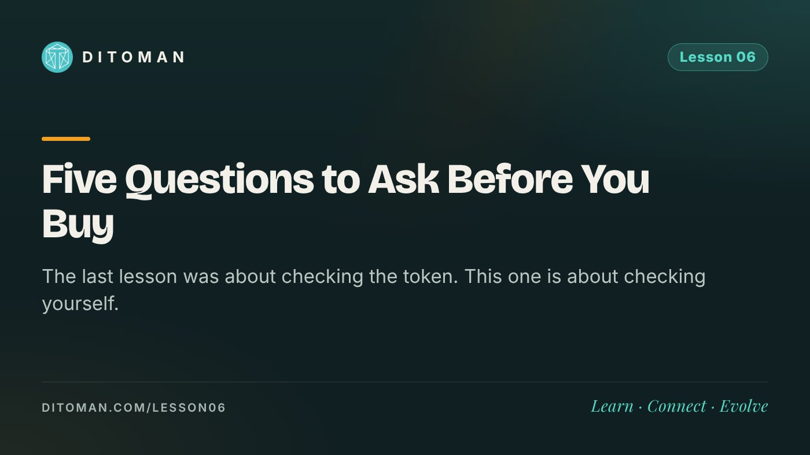

Cinco perguntas a fazer antes de comprar
پنج پرسش پیش از خرید
A última lição foi sobre verificar o token. Esta é sobre verificar-se a si próprio.
درس قبل دربارهی بررسی توکن بود. این درس دربارهی بررسی خودمان است.
Conteúdo da lição
محتوای درس
Leia a lição em inglês ou persa. Esta estrutura foi pensada para futuros sistemas de questionários, pontuação, reputação e recompensas.
درس را به فارسی یا انگلیسی بخوانید. این ساختار برای آزمونک، امتیاز، اعتبار و پاداشهایی طراحی شده که در آینده اضافه میشوند.
Na última lição vimos como verificar um token: o contrato está verificado, quem tem a oferta, podem criar-se novos tokens, há restrições escondidas, existe liquidez real.
Um token pode passar em todas estas verificações e mesmo assim ser uma má decisão para si.
Isto porque as verificações falam-lhe do token. Não lhe dizem nada sobre o seu raciocínio, o seu momento ou o que pode perder. Estas cinco perguntas dizem.
01. O que estou realmente a comprar?
Não o nome. Não o logótipo. O que faz este projeto, e o que teria de alcançar para que o token importasse?
Se não o consegue explicar em duas ou três frases simples a alguém que não sabe nada de cripto, ainda não o percebe. Não é motivo de vergonha. É motivo para esperar.
A maioria das perdas não vem de erros complicados. Vem de comprar algo que ninguém envolvido sabia descrever com clareza.
02. Porque acho que isto valerá mais no futuro?
Há uma resposta verdadeira a esta pergunta e há uma falsa.
Uma resposta real aponta para algo concreto: mais pessoas a usá-lo, um problema que resolve, uma oferta que não pode crescer, uma rede que fica mais forte à medida que cresce.
Uma resposta falsa aponta para o próprio preço: subiu na semana passada, alguém disse que vai continuar, toda a gente fala disso. Isso não é uma razão. É uma observação sobre o comportamento dos outros, e os outros podem parar a qualquer momento.
03. O que me mostraria que estava errado?
Esta é a pergunta que quase ninguém faz, e é a mais valiosa aqui.
Decida antecipadamente o que lhe diria que a ideia não resultou. Uma promessa não cumprida. Uma equipa que fica em silêncio. Um uso que nunca aparece. Escreva-o antes de comprar, enquanto ainda pensa com clareza.
Sem isto, cada queda de preço torna-se algo a desculpar em vez de algo com que aprender. As pessoas não costumam perder tudo numa só decisão. Perdem-no ao recusar aceitar uma série de pequenos sinais.
04. Posso dar-me ao luxo de perder isto por completo?
Não é «doeria?». É: a sua vida pode continuar normalmente se este valor for a zero e nunca mais voltar?
Isto pesa mais para quem já tem uma moeda instável, porque a tentação é maior e a almofada é mais fina. Se o dinheiro de que precisa para a renda, a comida, os medicamentos ou a família estiver num token, não está a investir. Está exposto.
O tamanho da sua posição decide como se vai comportar sob pressão. Grande demais, e o medo tomará as decisões por si.
05. Estou a comprar porque percebo, ou porque tenho medo de ficar de fora?
Seja honesto, porque só você saberá a resposta.
A urgência é o sinal de alerta mais fiável de toda esta área. As oportunidades reais não costumam desaparecer nos dez minutos seguintes. Tudo o que é feito para o levar a agir antes de pensar, seja uma contagem decrescente, uma multidão ou um amigo convicto, merece mais desconfiança, não menos.
Se a razão por que compra hoje é ter medo de como se vai sentir amanhã, isso não é análise. É pressão.
O objetivo das cinco
Nenhuma destas perguntas lhe dirá que token vai ter sucesso. Nada o diz, e quem afirmar o contrário está a vender alguma coisa.
O que fazem é garantir que a decisão é realmente sua: compreendida, bem dimensionada e tomada com uma ideia clara do que seria estar errado.
Verifique o token. Depois verifique-se a si próprio.
در درس قبل بررسی کردیم که چطور یک توکن را وارسی کنیم: آیا قرارداد تأیید شده، چه کسی عرضه را در اختیار دارد، آیا میتوان توکن جدید ساخت، آیا محدودیت پنهانی وجود دارد، و آیا نقدشوندگی واقعی هست.
یک توکن میتواند همه این بررسیها را پشت سر بگذارد و باز هم برای شما تصمیم درستی نباشد.
چون آن بررسیها درباره توکن هستند. درباره استدلال شما، زمانبندی شما، و اینکه چقدر توان از دست دادن دارید چیزی نمیگویند. این پنج پرسش میگویند.
۰۱. دقیقاً چه چیزی میخرم؟
نه نام. نه لوگو. این پروژه چه کاری انجام میدهد و برای اینکه توکنش ارزش داشته باشد، باید به چه چیزی برسد؟
اگر نمیتوانید در دو سه جمله ساده برای کسی که هیچ چیز از کریپتو نمیداند توضیحش دهید، هنوز آن را نفهمیدهاید. این چیز بدی نیست. فقط دلیلی است برای صبر کردن.
بیشتر ضررها از اشتباههای پیچیده نمیآید. از خریدن چیزی میآید که هیچکس نمیتوانست آن را روشن توصیف کند.
۰۲. چرا فکر میکنم بعداً ارزش بیشتری خواهد داشت؟
برای این پرسش یک پاسخ واقعی وجود دارد و یک پاسخ ساختگی.
پاسخ واقعی به چیزی مشخص اشاره میکند: استفاده بیشتر مردم، مسئلهای که حل میکند، عرضهای که نمیتواند رشد کند، شبکهای که با بزرگتر شدن قویتر میشود.
پاسخ ساختگی به خود قیمت اشاره میکند: هفته پیش بالا رفت، کسی گفت ادامه پیدا میکند، همه دربارهاش حرف میزنند. این دلیل نیست. این فقط مشاهده رفتار دیگران است، و دیگران هر لحظه میتوانند متوقف شوند.
۰۳. چه چیزی نشان میدهد که اشتباه کردهام؟
این پرسشی است که تقریباً هیچکس نمیپرسد، و ارزشمندترین پرسش این فهرست است.
از پیش مشخص کنید چه چیزی به شما میگوید این ایده جواب نداده است. وعدهای که عملی نشد. تیمی که ساکت شد. کاربردی که هرگز نیامد. پیش از خرید بنویسیدش، وقتی هنوز ذهنتان روشن است.
بدون این کار، هر افت قیمت به چیزی تبدیل میشود که باید توجیه شود، نه چیزی که باید از آن آموخت. مردم معمولاً با یک تصمیم همه چیز را از دست نمیدهند. با نپذیرفتن مجموعهای از نشانههای کوچک از دست میدهند.
۰۴. آیا توان از دست دادن کاملش را دارم؟
نه اینکه «آیا اذیت میشوم». آیا اگر این مبلغ صفر شود و هرگز برنگردد، زندگیتان مثل قبل ادامه پیدا میکند؟
این موضوع برای کسانی که پول ملیشان از پیش بیثبات است اهمیت بیشتری دارد، چون وسوسه بزرگتر و حاشیه امن کمتر است. اگر پولی که برای اجاره، غذا، دارو یا خانواده لازم دارید در یک توکن باشد، شما سرمایهگذاری نمیکنید. در معرض خطر هستید.
اندازه موقعیت شما تعیین میکند در شرایط سخت چطور رفتار کنید. اگر بیش از اندازه باشد، ترس به جای شما تصمیم میگیرد.
۰۵. به خاطر فهمیدن میخرم یا از ترس جا ماندن؟
صادق باشید، چون فقط خودتان پاسخ را میدانید.
عجله مطمئنترین نشانه هشدار در تمام این حوزه است. فرصتهای واقعی معمولاً در ده دقیقه آینده ناپدید نمیشوند. هر چیزی که طراحی شده تا شما پیش از فکر کردن اقدام کنید — یک شمارش معکوس، یک جمعیت، یا دوستی که خیلی مطمئن است — سزاوار تردید بیشتر است، نه کمتر.
اگر دلیل خرید امروزتان ترس از احساس فردایتان است، این تحلیل نیست. این عجله است.
هدف هر پنج پرسش
هیچکدام از این پرسشها به شما نمیگوید کدام توکن موفق میشود. هیچ چیز چنین کاری نمیکند، و هر کس ادعای خلافش را دارد چیزی برای فروش دارد.
کاری که میکنند این است که مطمئن شوند تصمیم واقعاً مال شماست: فهمیده شده، به اندازه درست، و با تصویری روشن از اینکه اشتباه بودن چه شکلی است.
توکن را بررسی کنید. بعد خودتان را.
A mesma regra aplica-se aqui
همین قاعده دربارهی ما هم صدق میکند
Estas perguntas aplicam-se ao TMN exatamente como a qualquer outro token. Preferimos que compreenda o que o Ditoman está a construir e decida com calma, a que aja depressa por entusiasmo.
این پرسشها دربارهی TMN هم دقیقاً همانطور صدق میکنند که دربارهی هر توکن دیگری. ترجیح میدهیم بفهمید دیتومان چه میسازد و آهسته تصمیم بگیرید، تا اینکه با هیجان سریع عمل کنید.
A oferta do TMN está concentrada, e a utilidade descrita é planeada e não operacional. Estes factos estão declarados no nosso whitepaper e na página do token, não escondidos por trás deles.
عرضهی TMN متمرکز است و کاربردهایی که توصیف کردهایم هنوز در حد برنامهاند و عملیاتی نشدهاند. این واقعیتها در وایتپیپر و صفحهی توکن ما آشکارا آمدهاند، نه اینکه پشت آنها پنهان شده باشند.
Conceitos-chave
مفاهیم کلیدی
- Compreender o que possui
- Tese versus movimento de preço
- Decidir a saída antecipadamente
- Dimensionamento da posição
- Capital de risco
- Medo de ficar de fora
- Urgência fabricada
- فهمیدن آنچه مالکش هستید
- استدلال در برابر حرکت قیمت
- تعیین زمان خروج از پیش
- اندازهی موقعیت
- سرمایهای که توان از دست دادنش را دارید
- ترس از جا ماندن
- عجلهی ساختگی
Objetivos de aprendizagem
اهداف یادگیری
- Explique em linguagem simples o que um projeto faz antes de o comprar.
- Distinguir uma razão real de uma observação de preço.
- Decida antecipadamente o que provaria que a ideia está errada.
- Dimensione uma posição pelo que pode perder por completo.
- Reconhecer a urgência como um sinal de alerta e não como uma oportunidade.
- پیش از خرید، با زبان ساده توضیح دهید یک پروژه چه کاری انجام میدهد.
- فرق یک دلیل واقعی با یک مشاهدهی ساده دربارهی قیمت را تشخیص دهید.
- از پیش تعیین کنید چه چیزی نادرست بودن ایده را نشان میدهد.
- اندازهی موقعیت را بر اساس مبلغی تعیین کنید که توان از دست دادن کاملش را دارید.
- عجله را نشانهی هشدار بدانید، نه فرصت.
Banco de perguntas futuro
بانک پرسشهای آزمونک آینده
Estas perguntas foram preparadas para o futuro sistema de questionários e participação do Ditoman. Mais tarde poderão sustentar pontuações de aprendizagem, camadas de reputação e uma eventual elegibilidade para recompensas em TMN.
این پرسشها برای سامانهی آزمونک و مشارکت آیندهی دیتومان آماده شدهاند. ممکن است بعدها مبنای امتیاز یادگیری، لایههای اعتبار و احتمالاً شرایط دریافت پاداش TMN شوند.
Pergunta 1
پرسش ۱
Qual destas é uma razão real para esperar que um token ganhe valor?
کدامیک دلیل واقعی برای انتظار افزایش ارزش یک توکن است؟
A. O preço subiu na semana passada
الف. قیمت هفتهی پیش بالا رفت
B. Um amigo tem a certeza
ب. یک دوست دربارهاش مطمئن است
C. Mais pessoas usam aquilo que faz
ج. مردم بیشتری از کاری که انجام میدهد استفاده میکنند
D. Fala-se muito disso na internet
د. در فضای آنلاین زیاد دربارهاش حرف زده میشود
Resposta certa: C
پاسخ درست: ج
Pergunta 2
پرسش ۲
Porque decidir de antemão o que provaria que está errado?
چرا باید از پیش تعیین کنید چه چیزی اشتباه بودن شما را نشان میدهد؟
A. Garante lucro
الف. سود را تضمین میکند
B. Permite julgar acontecimentos futuros com um critério claro em vez de os desculpar
ب. کمک میکند رویدادهای بعدی را با معیاری روشن بسنجید، نه اینکه برایشان توجیه بتراشید
C. Torna o token mais seguro
ج. توکن را امنتر میکند
D. É exigido pelas corretoras
د. صرافیها آن را الزامی کردهاند
Resposta certa: B
پاسخ درست: ب
Pergunta 3
پرسش ۳
O que significa realmente «posso dar-me ao luxo de perder isto por completo»?
«آیا توان از دست دادن کامل این مبلغ را دارم» واقعاً یعنی چه؟
Resposta certa: que a sua vida pudesse continuar normalmente se o valor fosse a zero e nunca voltasse.
پاسخ درست: اینکه اگر این مبلغ صفر شود و هرگز برنگردد، زندگیتان بتواند مثل قبل ادامه پیدا کند.
Pergunta 4
پرسش ۴
Verdadeiro ou falso: um token que passa todas as verificações técnicas é automaticamente uma boa decisão para si.
درست یا نادرست: توکنی که همهی بررسیهای فنی را پشت سر بگذارد، خودبهخود برای شما تصمیم درستی است.
Resposta certa: Falso. As verificações técnicas descrevem o token, não o seu raciocínio, o momento ou o risco.
پاسخ درست: نادرست. بررسیهای فنی توکن را توصیف میکنند، نه استدلال، زمانبندی یا ریسک شما را.
Pergunta 5
پرسش ۵
Porque é que a urgência é tratada como sinal de alerta?
چرا عجله نشانهی هشدار به حساب میآید؟
A. Porque as boas oportunidades são sempre lentas
الف. چون فرصتهای خوب همیشه کُند پیش میروند
B. Porque a pressão para agir antes de pensar é uma marca comum da manipulação
ب. چون وادار کردن آدمها به اقدام پیش از فکر کردن، از ویژگیهای رایج دستکاری است
C. Porque as decisões rápidas estão sempre erradas
ج. چون تصمیمهای سریع همیشه اشتباهاند
D. Porque os mercados fecham à noite
د. چون بازارها شبها تعطیلاند
Resposta certa: B
پاسخ درست: ب
Resumo no Instagram
خلاصه در اینستاگرام
Esta lição foi apresentada primeiro no Instagram do Ditoman, como parte da Série Segurança. A versão do Instagram dá um breve resumo visual, e esta página oferece a versão completa da lição.
خلاصهی تصویری این درس ابتدا در اینستاگرام دیتومان و در قالب مجموعهی امنیت منتشر شد. نسخهی اینستاگرام یک معرفی کوتاه و تصویری است و این صفحه نسخهی کامل آموزشی آن است.